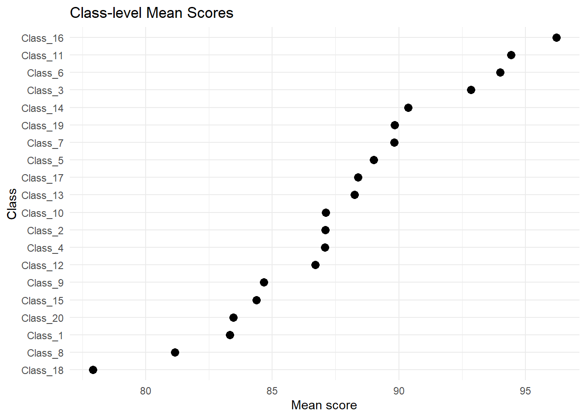
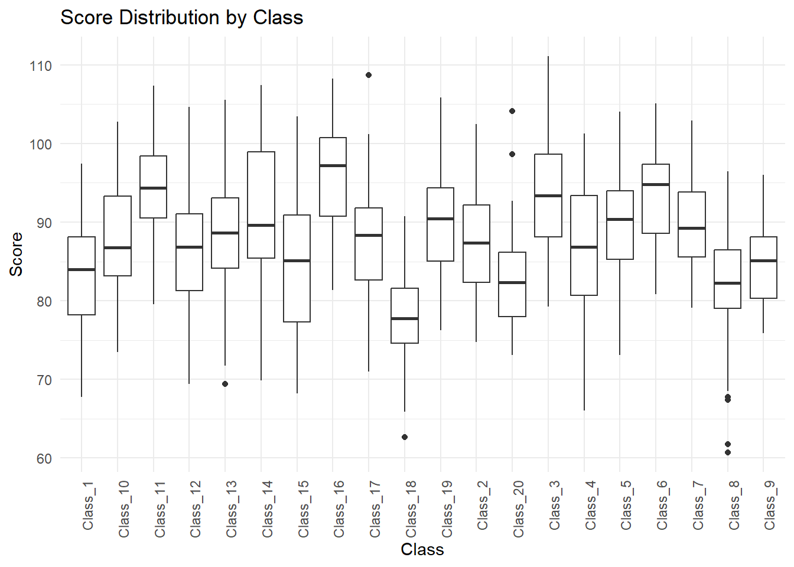
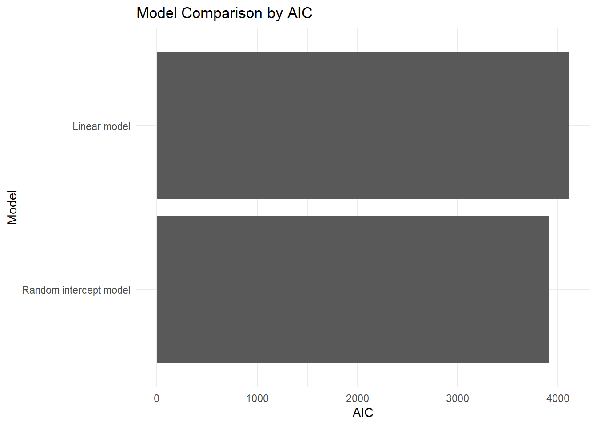
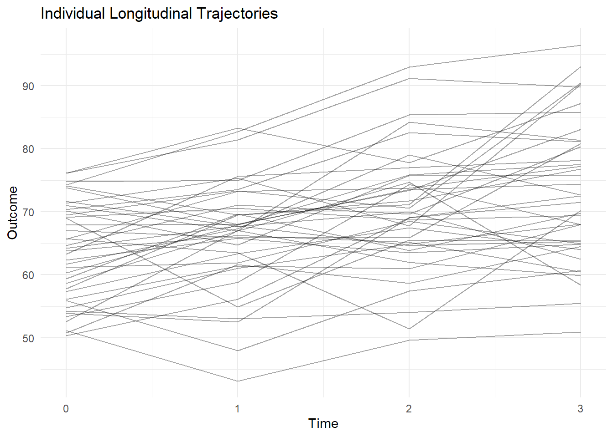
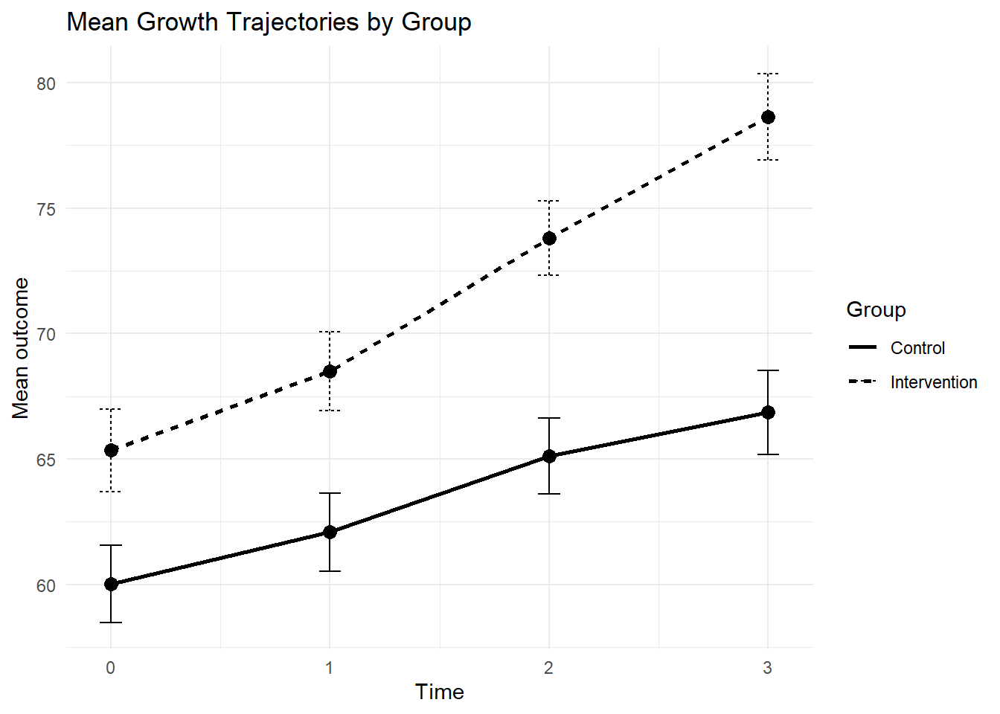
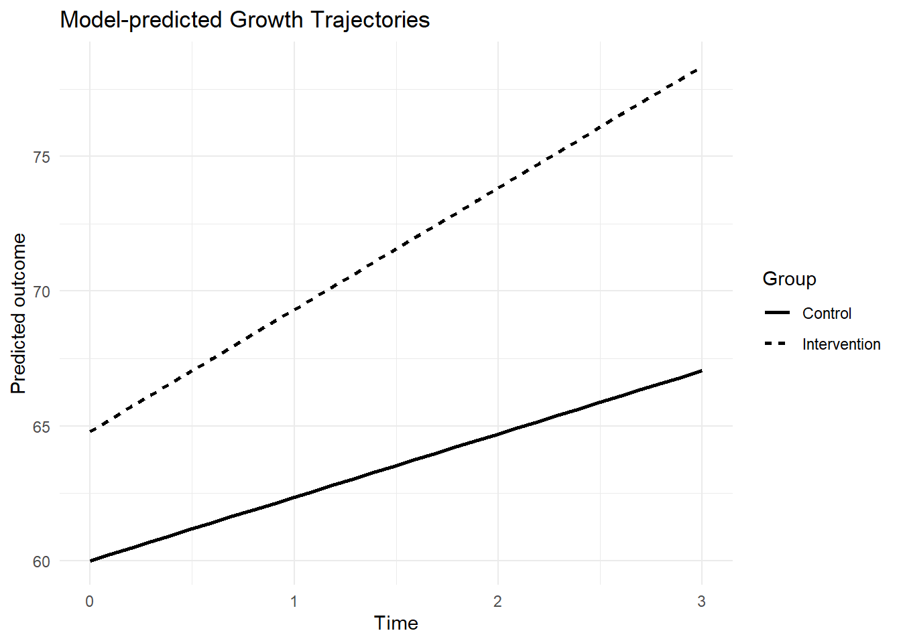
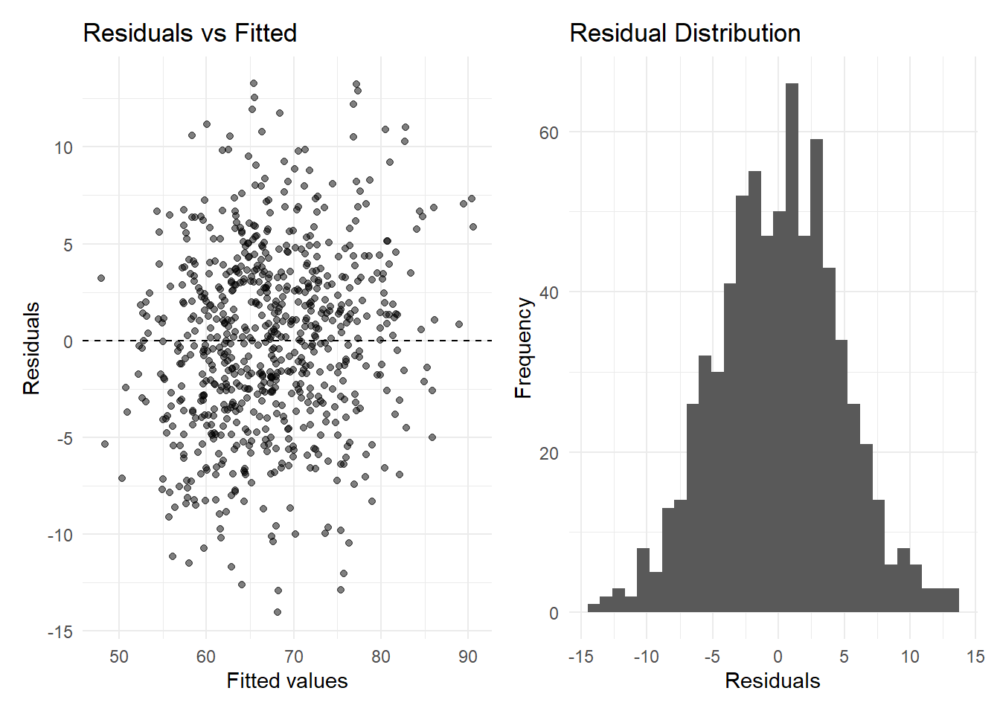

flowchart TD
A[Research Question]
--> B{Data Structure?}
B -->|Students in Classes| C[Hierarchical Data]
B -->|Repeated Time Points| D[Longitudinal Data]
C --> E[Random Intercept Model]
D --> F[Repeated Measures / Growth Model]
E --> G[Random Slope if Needed]
F --> G
G --> H[Model Comparison]
H --> I[Interpret Fixed and Random Effects]
I --> J[Report Results]
Advanced 14. Mô hình Hỗn hợp và Dữ liệu Dọc
Mixed Models and Longitudinal Data with R
Tổng quan bài học
TipKết quả học tập (Learning Outcomes)
Sau khi hoàn thành bài học này, học viên có thể:
- Hiểu dữ liệu phân cấp (Hierarchical Data)
- Hiểu dữ liệu lặp lại (Repeated Measures)
- Hiểu dữ liệu dọc (Longitudinal Data)
- Phân biệt fixed effects và random effects
- Chạy mô hình random intercept
- Chạy mô hình random slope
- Chạy mô hình repeated measures
- Trực quan hóa growth trajectories
- So sánh mô hình bằng AIC
- Diễn giải intraclass correlation coefficient (ICC)
- Viết kết quả mixed model theo chuẩn học thuật
NoteLogic bài học (Module Logic)
Bài học này trả lời câu hỏi:
Khi dữ liệu có cấu trúc lặp lại hoặc phân cấp, làm thế nào để phân tích đúng thay vì giả định tất cả quan sát độc lập?
Quy trình:
Nested / Repeated Data
↓
Identify Clustering
↓
Fixed Effects
↓
Random Effects
↓
Mixed Model
↓
Model Comparison
↓
Trajectory Visualization
↓
Academic ReportingQuy trình mixed model
1. Vì sao cần mixed models?
NoteKiến thức nền tảng (Knowledge Notes)
Là gì? (What?)
Mô hình hỗn hợp (Mixed Model) là mô hình kết hợp:
- Fixed effects
- Random effects
Nó phù hợp khi dữ liệu có cấu trúc phân cấp hoặc lặp lại.
Tại sao cần? (Why?)
Nhiều dữ liệu nghiên cứu không độc lập hoàn toàn.
Ví dụ:
- Sinh viên nằm trong lớp
- Lớp nằm trong trường
- Một người được đo nhiều lần
- Một đối tượng có nhiều quan sát theo thời gian
- Một ruộng có nhiều ô thí nghiệm
- Một giáo viên đánh giá nhiều học sinh
Nếu bỏ qua cấu trúc này, standard errors và p-values có thể không đáng tin cậy.
Khi nào dùng? (When?)
Dùng khi:
- Có repeated measures
- Có clustering
- Có nested data
- Có longitudinal data
- Có random variation giữa nhóm
- Muốn mô hình hóa sự khác biệt giữa cá nhân hoặc nhóm
ImportantỨng dụng trong nghiên cứu (Research Application)
Mixed models thường dùng trong:
- Giáo dục
- Tâm lý học
- Y tế
- Nông nghiệp
- Quản trị
- Nghiên cứu longitudinal
- Đánh giá chương trình
- Phân tích đa cấp
- Dữ liệu học sinh-lớp-trường
WarningSai lầm thường gặp (Common Mistakes)
Người học thường mắc lỗi:
- Dùng
lm()cho dữ liệu lặp lại - Bỏ qua cluster hoặc subject ID
- Không phân biệt fixed và random effects
- Diễn giải random effects như fixed effects
- Không kiểm tra dữ liệu theo nhóm
- Không trực quan hóa trajectory
- Chạy mô hình quá phức tạp so với dữ liệu
2. Chuẩn bị dữ liệu
NoteKiến thức nền tảng (Knowledge Notes)
Module này dùng dữ liệu mô phỏng public để render ổn định.
Dữ liệu gồm hai dạng:
- Dữ liệu phân cấp: students within classes
- Dữ liệu dọc: repeated measures over time
Cài đặt package
install.packages("tidyverse")
install.packages("lme4")
install.packages("lmerTest")
install.packages("broom.mixed")
install.packages("performance")
install.packages("emmeans")
install.packages("gt")
install.packages("patchwork")Nạp package
library(tidyverse)
library(gt)
library(patchwork)Kiểm tra packages
has_lme4 <- requireNamespace("lme4", quietly = TRUE)
has_lmerTest <- requireNamespace("lmerTest", quietly = TRUE)
has_broom_mixed <- requireNamespace("broom.mixed", quietly = TRUE)
has_performance <- requireNamespace("performance", quietly = TRUE)
has_emmeans <- requireNamespace("emmeans", quietly = TRUE) && "contrast" %in% getNamespaceExports("emmeans")
tibble(
package = c("lme4", "lmerTest", "broom.mixed", "performance", "emmeans"),
installed = c(has_lme4, has_lmerTest, has_broom_mixed, has_performance, has_emmeans)
)Tạo dữ liệu phân cấp
set.seed(123)
n_classes <- 20
students_per_class <- 30
class_effects <- tibble(
class_id = factor(paste0("Class_", 1:n_classes)),
class_random_intercept = rnorm(n_classes, mean = 0, sd = 5)
)
hier_data <- expand_grid(
class_id = factor(paste0("Class_", 1:n_classes)),
student_id = 1:students_per_class
) |>
left_join(class_effects, by = "class_id") |>
mutate(
motivation = rnorm(n(), mean = 3.5, sd = 0.8),
prior_score = rnorm(n(), mean = 65, sd = 10),
score = 50 +
4 * motivation +
0.35 * prior_score +
class_random_intercept +
rnorm(n(), mean = 0, sd = 6)
)
glimpse(hier_data)Rows: 600
Columns: 6
$ class_id <fct> Class_1, Class_1, Class_1, Class_1, Class_1, Cl…
$ student_id <int> 1, 2, 3, 4, 5, 6, 7, 8, 9, 10, 11, 12, 13, 14, …
$ class_random_intercept <dbl> -2.802378, -2.802378, -2.802378, -2.802378, -2.…
$ motivation <dbl> 2.645741, 3.325620, 2.679196, 2.916887, 2.99996…
$ prior_score <dbl> 50.84718, 68.18390, 73.46436, 66.78190, 56.2474…
$ score <dbl> 78.09460, 78.40690, 70.63965, 78.41342, 76.5402…Tạo dữ liệu dọc
set.seed(123)
n_students <- 180
time_points <- 4
student_effects <- tibble(
student_id = factor(1:n_students),
random_intercept = rnorm(n_students, mean = 0, sd = 6),
random_slope = rnorm(n_students, mean = 0, sd = 1.2)
)
long_data <- expand_grid(
student_id = factor(1:n_students),
time = 0:(time_points - 1)
) |>
left_join(student_effects, by = "student_id") |>
mutate(
group = sample(c("Control", "Intervention"), n_students, replace = TRUE)[as.integer(student_id)],
treatment = if_else(group == "Intervention", 1, 0),
outcome = 60 +
2.5 * time +
4 * treatment +
2.0 * time * treatment +
random_intercept +
random_slope * time +
rnorm(n(), mean = 0, sd = 5)
)
glimpse(long_data)Rows: 720
Columns: 7
$ student_id <fct> 1, 1, 1, 1, 2, 2, 2, 2, 3, 3, 3, 3, 4, 4, 4, 4, 5, 5,…
$ time <int> 0, 1, 2, 3, 0, 1, 2, 3, 0, 1, 2, 3, 0, 1, 2, 3, 0, 1,…
$ random_intercept <dbl> -3.3628539, -3.3628539, -3.3628539, -3.3628539, -1.38…
$ random_slope <dbl> -1.2759914, -1.2759914, -1.2759914, -1.2759914, 1.515…
$ group <chr> "Intervention", "Intervention", "Intervention", "Inte…
$ treatment <dbl> 1, 1, 1, 1, 1, 1, 1, 1, 1, 1, 1, 1, 1, 1, 1, 1, 1, 1,…
$ outcome <dbl> 67.78916, 69.09430, 69.26161, 73.88506, 67.20481, 55.…3. Fixed effects và random effects
TipKết quả học tập (Learning Outcomes)
Sau phần này, học viên có thể phân biệt fixed effects và random effects.
NoteKiến thức nền tảng (Knowledge Notes)
Fixed effect là gì?
Fixed effect là tác động trung bình của predictor mà ta muốn ước lượng trực tiếp.
Ví dụ:
motivation → score
time → outcome
treatment → outcomeRandom effect là gì?
Random effect mô hình hóa sự khác biệt giữa các nhóm hoặc cá nhân.
Ví dụ:
Mỗi lớp có baseline score khác nhau
Mỗi học sinh có điểm xuất phát khác nhau
Mỗi học sinh có tốc độ tăng trưởng khác nhauVí dụ cú pháp
| Mô hình | Ý nghĩa |
|---|---|
(1 | class_id) |
Random intercept theo lớp |
(1 | student_id) |
Random intercept theo học sinh |
(time | student_id) |
Random intercept và random slope theo học sinh |
(1 + time | student_id) |
Tương tự random slope |
Minh họa cấu trúc phân cấp
flowchart TD A[School] --> B[Class 1] A --> C[Class 2] B --> D[Student 1] B --> E[Student 2] C --> F[Student 3] C --> G[Student 4]
Fixed effects trả lời câu hỏi về tác động trung bình.
Random effects trả lời câu hỏi về sự khác biệt giữa nhóm hoặc cá nhân.
4. Khám phá dữ liệu phân cấp
TipKết quả học tập (Learning Outcomes)
Sau phần này, học viên có thể trực quan hóa dữ liệu theo cluster.
Mean score theo class
class_summary <- hier_data |>
group_by(class_id) |>
summarise(
n = n(),
mean_score = mean(score),
sd_score = sd(score),
.groups = "drop"
)
class_summaryBiểu đồ class means
ggplot(class_summary, aes(x = mean_score, y = reorder(class_id, mean_score))) +
geom_point(size = 3) +
labs(
title = "Class-level Mean Scores",
x = "Mean score",
y = "Class"
) +
theme_minimal()
Boxplot theo class
ggplot(hier_data, aes(x = class_id, y = score)) +
geom_boxplot() +
labs(
title = "Score Distribution by Class",
x = "Class",
y = "Score"
) +
theme_minimal() +
theme(
axis.text.x = element_text(angle = 90, hjust = 1)
)
ImportantDiễn giải kết quả (Interpretation)
Nếu mean score khác nhau rõ giữa các lớp, dữ liệu có thể có clustering.
Khi đó mixed model phù hợp hơn hồi quy tuyến tính đơn giản.
5. Linear model thông thường
TipKết quả học tập (Learning Outcomes)
Sau phần này, học viên thấy giới hạn của mô hình lm() khi dữ liệu có cluster.
Chạy mô hình lm
lm_model <- lm(
score ~ motivation + prior_score,
data = hier_data
)
summary(lm_model)
Call:
lm(formula = score ~ motivation + prior_score, data = hier_data)
Residuals:
Min 1Q Median 3Q Max
-23.6906 -4.8960 0.0973 5.0311 19.6359
Coefficients:
Estimate Std. Error t value Pr(>|t|)
(Intercept) 52.78752 2.34787 22.483 <2e-16 ***
motivation 3.47470 0.39126 8.881 <2e-16 ***
prior_score 0.35005 0.02978 11.754 <2e-16 ***
---
Signif. codes: 0 '***' 0.001 '**' 0.01 '*' 0.05 '.' 0.1 ' ' 1
Residual standard error: 7.44 on 597 degrees of freedom
Multiple R-squared: 0.2752, Adjusted R-squared: 0.2728
F-statistic: 113.3 on 2 and 597 DF, p-value: < 2.2e-16
WarningSai lầm thường gặp (Common Mistakes)
lm() giả định các quan sát độc lập.
Nếu học sinh trong cùng lớp giống nhau hơn học sinh khác lớp, giả định độc lập có thể bị vi phạm.
6. Random intercept model
TipKết quả học tập (Learning Outcomes)
Sau phần này, học viên có thể chạy mô hình random intercept.
NoteKiến thức nền tảng (Knowledge Notes)
Random intercept model cho phép mỗi nhóm có baseline khác nhau.
Cú pháp:
score ~ motivation + prior_score + (1 | class_id)Ý nghĩa:
score được dự đoán bởi motivation và prior_score,
nhưng mỗi lớp có intercept riêng.Chạy random intercept model
if (has_lme4) {
random_intercept_model <- lme4::lmer(
score ~ motivation + prior_score + (1 | class_id),
data = hier_data
)
summary(random_intercept_model)
}Linear mixed model fit by REML ['lmerMod']
Formula: score ~ motivation + prior_score + (1 | class_id)
Data: hier_data
REML criterion at convergence: 3895.3
Scaled residuals:
Min 1Q Median 3Q Max
-2.8679 -0.6501 0.0367 0.6948 3.5547
Random effects:
Groups Name Variance Std.Dev.
class_id (Intercept) 21.46 4.633
Residual 34.94 5.911
Number of obs: 600, groups: class_id, 20
Fixed effects:
Estimate Std. Error t value
(Intercept) 51.14570 2.15727 23.71
motivation 3.46108 0.31340 11.04
prior_score 0.37595 0.02404 15.64
Correlation of Fixed Effects:
(Intr) motvtn
motivation -0.479
prior_score -0.706 -0.041Tidy kết quả
if (has_broom_mixed && exists("random_intercept_model")) {
broom.mixed::tidy(
random_intercept_model,
effects = "fixed",
conf.int = TRUE
)
}
ImportantDiễn giải kết quả (Interpretation)
Fixed effect của motivation cho biết mối liên hệ trung bình giữa motivation và score, sau khi tính đến sự khác biệt baseline giữa các lớp.
7. Intraclass Correlation Coefficient
TipKết quả học tập (Learning Outcomes)
Sau phần này, học viên có thể hiểu và tính ICC.
NoteKiến thức nền tảng (Knowledge Notes)
ICC là gì?
Intraclass Correlation Coefficient cho biết tỷ lệ phương sai của outcome nằm ở cấp nhóm.
Ví dụ:
ICC = 0.20nghĩa là khoảng 20% phương sai outcome nằm ở cấp class.
Null model
if (has_lme4) {
null_model <- lme4::lmer(
score ~ 1 + (1 | class_id),
data = hier_data
)
summary(null_model)
}Linear mixed model fit by REML ['lmerMod']
Formula: score ~ 1 + (1 | class_id)
Data: hier_data
REML criterion at convergence: 4182.7
Scaled residuals:
Min 1Q Median 3Q Max
-2.77108 -0.66356 0.03746 0.63409 2.68316
Random effects:
Groups Name Variance Std.Dev.
class_id (Intercept) 19.17 4.378
Residual 57.88 7.608
Number of obs: 600, groups: class_id, 20
Fixed effects:
Estimate Std. Error t value
(Intercept) 87.802 1.027 85.49Tính ICC thủ công
if (exists("null_model")) {
variance_components <- as.data.frame(lme4::VarCorr(null_model))
between_class_var <- variance_components$vcov[variance_components$grp == "class_id"]
residual_var <- variance_components$vcov[variance_components$grp == "Residual"]
icc <- between_class_var / (between_class_var + residual_var)
icc
}[1] 0.2487923ICC càng cao thì clustering càng quan trọng.
Nếu ICC đáng kể, mixed model thường phù hợp hơn lm().
8. So sánh lm và mixed model
TipKết quả học tập (Learning Outcomes)
Sau phần này, học viên có thể so sánh mô hình bằng AIC.
if (exists("random_intercept_model")) {
model_comparison <- tibble(
model = c("Linear model", "Random intercept model"),
AIC = c(
AIC(lm_model),
AIC(random_intercept_model)
)
)
model_comparison
}Biểu đồ so sánh AIC
if (exists("model_comparison")) {
ggplot(model_comparison, aes(x = AIC, y = reorder(model, AIC))) +
geom_col() +
labs(
title = "Model Comparison by AIC",
x = "AIC",
y = "Model"
) +
theme_minimal()
}
WarningSai lầm thường gặp (Common Mistakes)
AIC thấp hơn gợi ý mô hình phù hợp tốt hơn theo tiêu chí đó, nhưng không nên chọn mô hình chỉ dựa vào AIC.
Cần xét cả:
- Câu hỏi nghiên cứu
- Thiết kế dữ liệu
- Độ phức tạp mô hình
- Diễn giải
9. Dữ liệu dọc và repeated measures
TipKết quả học tập (Learning Outcomes)
Sau phần này, học viên có thể nhận diện dữ liệu repeated measures.
NoteKiến thức nền tảng (Knowledge Notes)
Dữ liệu dọc có nhiều quan sát theo thời gian trên cùng một đơn vị.
Ví dụ:
Student 1: time 0, 1, 2, 3
Student 2: time 0, 1, 2, 3Các quan sát trong cùng student thường không độc lập.
Kiểm tra dữ liệu
long_data |>
count(student_id) |>
summarise(
min_time_points = min(n),
max_time_points = max(n)
)Mean outcome theo time và group
time_summary <- long_data |>
group_by(group, time) |>
summarise(
mean_outcome = mean(outcome),
sd_outcome = sd(outcome),
n = n(),
se = sd_outcome / sqrt(n),
.groups = "drop"
)
time_summary10. Visualize longitudinal trajectories
TipKết quả học tập (Learning Outcomes)
Sau phần này, học viên có thể vẽ trajectory theo cá nhân và nhóm.
Individual trajectories
sample_students <- sample(unique(long_data$student_id), 40)
ggplot(
long_data |> filter(student_id %in% sample_students),
aes(x = time, y = outcome, group = student_id)
) +
geom_line(alpha = 0.35) +
labs(
title = "Individual Longitudinal Trajectories",
x = "Time",
y = "Outcome"
) +
theme_minimal()
Group mean trajectories
fig_growth <- ggplot(
time_summary,
aes(x = time, y = mean_outcome, group = group, linetype = group)
) +
geom_line(linewidth = 1) +
geom_point(size = 3) +
geom_errorbar(
aes(ymin = mean_outcome - 1.96 * se, ymax = mean_outcome + 1.96 * se),
width = 0.1
) +
labs(
title = "Mean Growth Trajectories by Group",
x = "Time",
y = "Mean outcome",
linetype = "Group"
) +
theme_minimal()
fig_growth
ImportantDiễn giải kết quả (Interpretation)
Nếu đường của nhóm intervention tăng nhanh hơn control, có thể có group-by-time interaction.
Cần kiểm tra bằng mô hình.
11. Random intercept longitudinal model
TipKết quả học tập (Learning Outcomes)
Sau phần này, học viên có thể chạy repeated-measures mixed model.
Random intercept theo student
if (has_lme4) {
longitudinal_ri_model <- lme4::lmer(
outcome ~ time * group + (1 | student_id),
data = long_data
)
summary(longitudinal_ri_model)
}Linear mixed model fit by REML ['lmerMod']
Formula: outcome ~ time * group + (1 | student_id)
Data: long_data
REML criterion at convergence: 4745.1
Scaled residuals:
Min 1Q Median 3Q Max
-2.64756 -0.59737 0.03007 0.59667 2.50458
Random effects:
Groups Name Variance Std.Dev.
student_id (Intercept) 30.92 5.560
Residual 28.13 5.304
Number of obs: 720, groups: student_id, 180
Fixed effects:
Estimate Std. Error t value
(Intercept) 60.0015 0.7261 82.639
time 2.3490 0.2421 9.703
groupIntervention 4.7936 1.0629 4.510
time:groupIntervention 2.1695 0.3544 6.122
Correlation of Fixed Effects:
(Intr) time grpInt
time -0.500
grpIntrvntn -0.683 0.342
tm:grpIntrv 0.342 -0.683 -0.500Fixed effects table
if (has_broom_mixed && exists("longitudinal_ri_model")) {
broom.mixed::tidy(
longitudinal_ri_model,
effects = "fixed",
conf.int = TRUE
)
}
ImportantDiễn giải kết quả (Interpretation)
Hệ số time:groupIntervention cho biết tốc độ thay đổi theo thời gian có khác giữa nhóm intervention và control hay không.
12. Random slope model
TipKết quả học tập (Learning Outcomes)
Sau phần này, học viên có thể hiểu random slope.
NoteKiến thức nền tảng (Knowledge Notes)
Random slope cho phép mỗi cá nhân có tốc độ thay đổi riêng theo thời gian.
Cú pháp:
(time | student_id)nghĩa là mỗi student có intercept riêng và slope time riêng.
Random slope model
if (has_lme4) {
longitudinal_rs_model <- lme4::lmer(
outcome ~ time * group + (time | student_id),
data = long_data
)
summary(longitudinal_rs_model)
}Linear mixed model fit by REML ['lmerMod']
Formula: outcome ~ time * group + (time | student_id)
Data: long_data
REML criterion at convergence: 4741.4
Scaled residuals:
Min 1Q Median 3Q Max
-2.51149 -0.56683 0.01968 0.57960 2.35416
Random effects:
Groups Name Variance Std.Dev. Corr
student_id (Intercept) 31.215 5.587
time 1.279 1.131 -0.14
Residual 26.014 5.100
Number of obs: 720, groups: student_id, 180
Fixed effects:
Estimate Std. Error t value
(Intercept) 60.0015 0.7175 83.623
time 2.3490 0.2598 9.040
groupIntervention 4.7936 1.0503 4.564
time:groupIntervention 2.1695 0.3804 5.704
Correlation of Fixed Effects:
(Intr) time grpInt
time -0.485
grpIntrvntn -0.683 0.332
tm:grpIntrv 0.332 -0.683 -0.485So sánh random intercept và random slope
if (exists("longitudinal_ri_model") && exists("longitudinal_rs_model")) {
longitudinal_comparison <- tibble(
model = c("Random intercept", "Random intercept + slope"),
AIC = c(
AIC(longitudinal_ri_model),
AIC(longitudinal_rs_model)
)
)
longitudinal_comparison
}
WarningSai lầm thường gặp (Common Mistakes)
Random slope model phức tạp hơn.
Nếu dữ liệu ít time points hoặc ít observations, mô hình có thể khó hội tụ.
13. Predicted trajectories
TipKết quả học tập (Learning Outcomes)
Sau phần này, học viên có thể tạo predicted values từ mixed model.
if (exists("longitudinal_ri_model")) {
prediction_grid <- expand_grid(
time = seq(0, 3, by = 0.1),
group = c("Control", "Intervention")
)
prediction_grid$predicted <- predict(
longitudinal_ri_model,
newdata = prediction_grid,
re.form = NA
)
ggplot(prediction_grid, aes(x = time, y = predicted, linetype = group)) +
geom_line(linewidth = 1) +
labs(
title = "Model-predicted Growth Trajectories",
x = "Time",
y = "Predicted outcome",
linetype = "Group"
) +
theme_minimal()
}
Predicted trajectories giúp diễn giải interaction dễ hơn bảng hệ số.
14. Estimated marginal means
TipKết quả học tập (Learning Outcomes)
Sau phần này, học viên biết dùng emmeans với mixed models.
emmeans theo time và group
if (has_emmeans && exists("longitudinal_ri_model")) {
emm_long <- emmeans::emmeans(
longitudinal_ri_model,
~ group | time,
at = list(time = 0:3)
)
emm_long
}time = 0:
group emmean SE df lower.CL upper.CL
Control 60.0 0.726 305 58.6 61.4
Intervention 64.8 0.776 305 63.3 66.3
time = 1:
group emmean SE df lower.CL upper.CL
Control 62.4 0.640 191 61.1 63.6
Intervention 69.3 0.684 191 68.0 70.7
time = 2:
group emmean SE df lower.CL upper.CL
Control 64.7 0.640 191 63.4 66.0
Intervention 73.8 0.684 191 72.5 75.2
time = 3:
group emmean SE df lower.CL upper.CL
Control 67.0 0.726 305 65.6 68.5
Intervention 78.4 0.776 305 76.8 79.9
Degrees-of-freedom method: kenward-roger
Confidence level used: 0.95 Pairwise comparison
if (has_emmeans && exists("emm_long")) {
emmeans::contrast(
emm_long,
method = "pairwise"
)
}time = 0:
contrast estimate SE df t.ratio p.value
Control - Intervention -4.79 1.060 305 -4.510 <0.0001
time = 1:
contrast estimate SE df t.ratio p.value
Control - Intervention -6.96 0.937 191 -7.429 <0.0001
time = 2:
contrast estimate SE df t.ratio p.value
Control - Intervention -9.13 0.937 191 -9.744 <0.0001
time = 3:
contrast estimate SE df t.ratio p.value
Control - Intervention -11.30 1.060 305 -10.634 <0.0001
Degrees-of-freedom method: kenward-roger 15. Model diagnostics
TipKết quả học tập (Learning Outcomes)
Sau phần này, học viên biết kiểm tra residuals của mixed model.
Residual plots
if (exists("longitudinal_ri_model")) {
diag_long <- tibble(
fitted = fitted(longitudinal_ri_model),
residual = resid(longitudinal_ri_model)
)
p1 <- ggplot(diag_long, aes(x = fitted, y = residual)) +
geom_point(alpha = 0.5) +
geom_hline(yintercept = 0, linetype = "dashed") +
labs(
title = "Residuals vs Fitted",
x = "Fitted values",
y = "Residuals"
) +
theme_minimal()
p2 <- ggplot(diag_long, aes(x = residual)) +
geom_histogram(bins = 30) +
labs(
title = "Residual Distribution",
x = "Residuals",
y = "Frequency"
) +
theme_minimal()
p1 + p2
}
performance package
if (has_performance && exists("longitudinal_ri_model")) {
performance::check_model(longitudinal_ri_model)
}16. Viết kết quả học thuật
NoteKiến thức nền tảng (Knowledge Notes)
Khi viết mixed model, cần báo cáo:
- Cấu trúc dữ liệu
- Fixed effects
- Random effects
- Software/package
- Model comparison nếu có
- Interaction nếu có
- ICC nếu phù hợp
- Predicted trajectories nếu helpful
Template random intercept
A linear mixed-effects model was estimated with students nested within classes. Motivation and prior score were included as fixed effects, while class was modeled as a random intercept. The results indicated that motivation was positively associated with score after accounting for class-level variation.Template ICC
The intraclass correlation coefficient indicated that approximately [ICC]% of the variance in scores was attributable to differences between classes.Template longitudinal model
A longitudinal mixed-effects model was estimated with repeated observations nested within students. The model included fixed effects for time, group, and their interaction, with a random intercept for each student.Template interaction
The time-by-group interaction was positive, suggesting that the intervention group showed a faster increase in outcomes over time compared with the control group.
WarningSai lầm thường gặp (Common Mistakes)
Không nên viết:
The mixed model proves the intervention caused improvement.Nên viết:
The mixed model suggests that the intervention group improved more rapidly over time, conditional on the model specification and study design.17. Bài tập thực hành
ImportantBài tập thực hành (Practice Exercise)
Hãy thực hiện:
- Tạo dữ liệu học sinh nằm trong lớp.
- Vẽ mean outcome theo class.
- Chạy
lm(). - Chạy random intercept model.
- Tính ICC.
- So sánh AIC giữa
lm()và mixed model. - Tạo dữ liệu repeated measures.
- Vẽ individual trajectories.
- Vẽ group mean trajectories.
- Chạy random intercept longitudinal model.
- Chạy random slope model.
- Tạo predicted trajectories.
- Viết đoạn kết quả học thuật.
18. Thử thách
WarningThử thách (Challenge)
Tình huống
Một nghiên cứu đo kết quả học tập của 300 học sinh ở 15 lớp. Mỗi học sinh được đo 4 lần trong học kỳ.
Câu hỏi
- Vì sao
lm()có thể không phù hợp? - Có mấy cấp dữ liệu?
- Random intercept nên đặt ở đâu?
- Khi nào cần random slope?
- Nên vẽ biểu đồ gì?
- Nên báo cáo kết quả thế nào?
TipGợi ý trả lời (Suggested Solution)
Một câu trả lời tốt nên nêu:
- Dữ liệu không độc lập vì học sinh nằm trong lớp và được đo lặp lại.
- Có thể có cấp lớp, học sinh và thời gian.
- Random intercept có thể đặt cho class và student tùy cấu trúc.
- Random slope cần khi tốc độ thay đổi theo thời gian khác nhau giữa học sinh.
- Nên vẽ individual trajectories và group mean trajectories.
- Báo cáo fixed effects, random effects, ICC và interaction nếu có.
19. Dự án nhỏ
ImportantDự án nhỏ (Mini Project)
Chủ đề
Mixed Models and Longitudinal Data Report
Sản phẩm đầu ra
Học viên cần tạo:
Mixed_Models_Report.htmlNội dung báo cáo
- Research question
- Data structure
- Cluster description
- Descriptive visualization
- Linear model baseline
- Random intercept model
- ICC
- Longitudinal trajectory plot
- Random slope model
- Model comparison
- Predicted trajectories
- Academic interpretation
- Limitations
20. Điểm cần ghi nhớ
- Mixed models phù hợp với dữ liệu phân cấp hoặc lặp lại.
- Fixed effects là tác động trung bình cần ước lượng.
- Random effects mô hình hóa sự khác biệt giữa nhóm hoặc cá nhân.
- Random intercept cho phép baseline khác nhau giữa nhóm.
- Random slope cho phép tác động hoặc tốc độ thay đổi khác nhau giữa nhóm.
- ICC cho biết mức độ clustering.
- Dữ liệu longitudinal cần xem xét repeated measures.
- Trajectory plots rất quan trọng để diễn giải dữ liệu dọc.
- Không nên bỏ qua cấu trúc dữ liệu khi chọn mô hình.
21. Bước tiếp theo
NoteBước tiếp theo (What Next?)
Sau khi hoàn thành phần này, học viên nên:
- Biết nhận diện dữ liệu phân cấp và dữ liệu dọc.
- Biết chạy random intercept và random slope models.
- Biết tính ICC.
- Biết vẽ growth trajectories.
- Chuyển sang:
Reproducible Research and Reporting
Trong phần tiếp theo, chúng ta sẽ học cách tổ chức project, viết báo cáo Quarto, xuất bảng/hình và xây dựng workflow nghiên cứu tái lập.